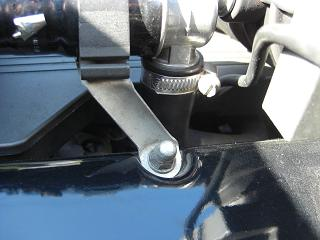
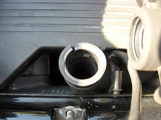
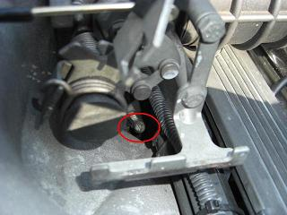
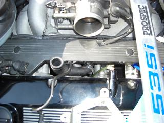
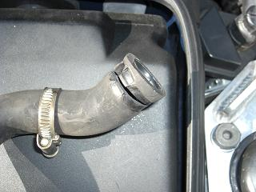
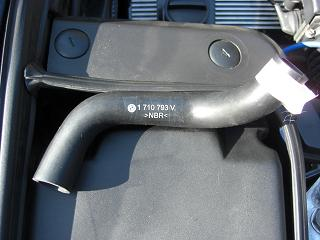
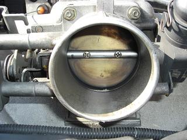
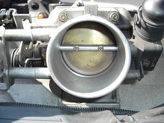
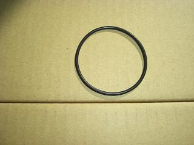
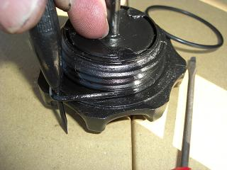

 今回、交換するアイドルバルブから下へ行くホース 狭いところを通ってて交換しにくそうだなぁ。。
|
  とりあえず、アイドルバルブを外したところ。 もう１方は、インマニの真ん中辺りに刺さっている。 下に３センチぐらい裂けていた。。 ホースバンドの頭がアクセスしやすそうな方向に向いていて 助かった。 少し長めの(－)ドライバーがあると便利。
|
  バンドを緩めて、おもいっきり引っ張ってもホースが外れない・・・ どうやら、固着してるようだ。。 さすが17年物（笑 結局、外す予定の無かったエアフロを外して作業することにした。スペースができ、ねじるようにしながら引き抜いた。外したホースは、プラスチックのように硬化していた。
|
 新しく用意したホース（P/N13411710793) ちゃんと弾性がある＾＾
|
  元に戻す前に、せっかく外したのでアイドルバルブと共にスロットルも掃除しておいた。 黒い汚れがスロットル内面（特にフラップの奥）にこびりついていた。 後は、ばらした逆の手順で元に戻す。 交換後は、掃除が効いたのか以前より気持ちよく吹け上がる（気がする）。
|
おまけ パワステタンクのパッキン交換（P/N32411128333)   medama1goさんに、キャップのパッキンだけ部品が出ると教えていただいたので、交換した＾＾ タンクがオイルで滲むのは、このパッキンが原因で起こることが多いそうだ。
|